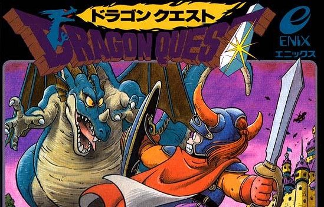

Players whose interest in the medium began in the last decade or so sometime take for granted the breadth and variety of titles that can be found in almost any genre. From tactical first person shooters to environmental exploration games, today’s games and genres and styles are easy to find if you know how to look. This, of course, wasn’t always the case. Every modern genre and kind of game, even the juggernauts of the industry, had to begin somewhere. Today, we will examine the humble origins of Japanese RPGs, a long time game staple that exemplifies the Japanese market while having distinctly Western roots
To understand the rise of the RPG in Japan one must first understand just how omnipresent the Western Role-Playing Game was in the world of early 80s computer gaming. Two game series ruled the day: Ultima and Wizardry; both were dungeon crawling exploration games that took much of their inspiration from Dungeons & Dragons. These series were hugely successful in the West, but they didn’t have quite the same effect in the Japanese market. This was understandable, as the games were heavily text based and built upon the success of tabletop RPGs, which were not as accessible at the time in Japan. (Dungeons & Dragons itself did not see an official release in the country until 1985). That being said, demand for the genre was growing slowly but steadily in the East as well, so it was only a matter of time before the country began to experiment with RPGs themselves.
The first Japanese made RPG that legitimized the genre was actually made by the Dutch-born Henk Rogers in 1984. This game, titled The Black Onyx, released on the PC-8801 and ported later to the MSX and Famicom, was the best selling computer game of all time in Japan in 1984, and won various game of the year awards in the country as well. It was essentially a Wizardry clone, but just the fact that it was in Japanese made it far more accessible to the general gaming public. The Black Onyx introduced a lot of the staples of the Japanese RPG genre, as in it you took control of a party of five adventurers that must traverse monster filled dungeons in a quest to retrieve the mystical Black Onyx
